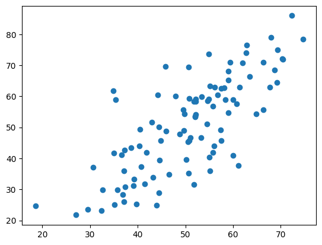
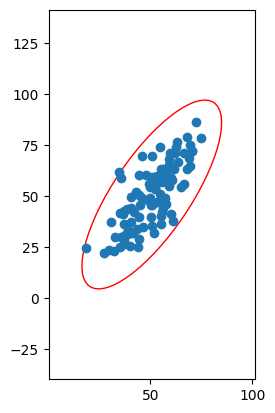
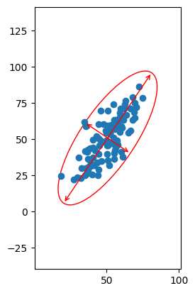
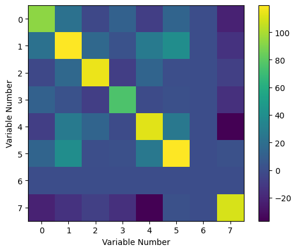
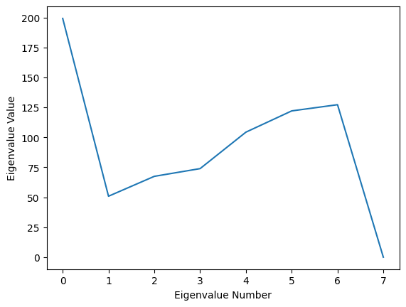
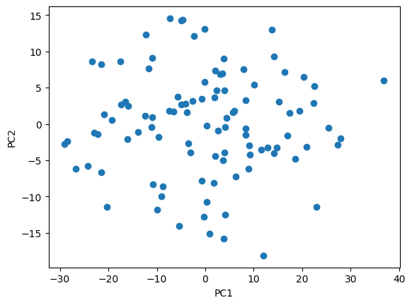

Principal Component Analysis#
This tutorial will cover the basics of PCA (principal component analysis). This is a technique using linear algebra to project a dataset in high dimensions (that is, with a large number of free parameters: \(f(x_1, x_2, ..., x_n)\)) onto a lower-dimensional subspace (so that there are fewer free parameters to compare: \(f'(x'_1, x'_2, ..., x'_m)\) with \(m<n\)). In PCA, the parameters of the data considered are called principal components. We will go into detail about the mathematical underpinning of why this works and show a PCA computation in detail on random data.
Here, we’ll only use numpy to perform the analysis.
import numpy as np
import matplotlib.pyplot as plt
Motivation: A simple example in two-dimensions#
To illustrate the process of PCA, we’ll first show how it looks on a simple two-dimensional system without going into detail on each step. This will give you some geometric intuition for what PCA is doing, without getting bogged down in the details of what the steps are. After this, we will do a more detailed and complicated PCA step-by-step, explaining the math and illustrating with code.
We’ll start with some randomly generated data in two dimensions:
data = np.ndarray([2,100])
data[0] = np.random.default_rng().normal(50, 10, size=(1, 100))
data[1] = np.random.default_rng().normal(0, 10, size=(1, 100)) + data[0]
plt.scatter(data[0], data[1])
<matplotlib.collections.PathCollection at 0x7fe1a81e7400>

As we can see, our data looks like it has some correlations. Now if we examine the structure of our data, we could look at it in terms of the x-variance and the y-variance, and the combination of both will capture the entirety of the variance in our data. The x-variance and the y-variance encode the spread of the data along either axis, and then the x-y covariance encodes the spread of the data along the diagonal.
But this is probably not the most efficient way to study our variance. We’re using three numbers to describe what is ultimately a two-dimensional system! Since we’re in two-dimensions, we should be guaranteed a way to use only two numbers to describe it. This is where linear algebra comes in.
In order to understand the variance in our data using as few numbers as possible, we are going to draw an ellipse around it (in two-dimensions; in higher dimensional spaces, the idea remains the same, but the ellipse is replaced by a hyperellipsoid). The orientation and size of the ellipse will be determined by the dataset, and it is sometimes called the covariance ellipse to remind us of this.
To demonstrate, there is some code below that shows an ellipse drawn around this simple (randomly generated) 2-d dataset. Note that this is the same data as above, but the scale is different on the plot, so it may look a litle different.
cov_simple = np.cov(data[0], data[1])
lambda_, x = np.linalg.eig(cov_simple)
lambda_ = np.sqrt(lambda_)
from matplotlib.patches import Ellipse
ax = plt.subplot(111)
ell = Ellipse(xy=(np.mean(data[0]), np.mean(data[1])), width=lambda_[0]*6, height=lambda_[1]*6, angle=np.rad2deg(np.arctan(x[1,0]/x[0, 0])), edgecolor='r', facecolor='none')
ax.add_artist(ell)
ax.set_xlim([np.mean(data[0])-lambda_[0]*8, np.mean(data[0])+lambda_[0]*8])
ax.set_ylim([np.mean(data[1])-lambda_[1]*5, np.mean(data[1])+lambda_[1]*5])
plt.scatter(data[0], data[1])
ax.set_aspect(1)
plt.show()

The orientation and shape of the ellipse is always fixed by the data itself, so that the ratio between the length of its axes and the rotation will be uniquely defined by the data. Note that we can choose to multiply the length of the axes by the same constant without changing the ratio or the orientation. There are particular ways to compute the scale of the axes, but the size of the ellipse is actually irrelevant for our purposes here (though they do have meaning in statistics: see confidence ellipse and prediction ellipse if you’re interested).
If we examine the axes of the ellipse, one can see that they form an equally valid basis for our data space as the x-y axes we’ve chosen here. In this choice of basis (remember that we can set our origin to be wherever we want and we can rotate our axes freely in any vector space), we have maximized the amount of variance along one basis vector. These basis vectors are called the principal components of our data. See below:
ax = plt.subplot(111)
ell = Ellipse(xy=(np.mean(data[0]), np.mean(data[1])), width=lambda_[0]*6, height=lambda_[1]*6, angle=np.rad2deg(np.arctan(x[1,0]/x[0, 0])), edgecolor='r', facecolor='none')
ax.add_artist(ell)
ax.set_xlim([np.mean(data[0])-lambda_[0]*8, np.mean(data[0])+lambda_[0]*8])
ax.set_ylim([np.mean(data[1])-lambda_[1]*5, np.mean(data[1])+lambda_[1]*5])
ax.annotate("",
xy=(ell.center[0] - ell.width/2 * x[0,0],
ell.center[1] - ell.width/2 * x[1,0]),
xytext=(ell.center[0] + ell.width/2 * x[0,0],
ell.center[1] + ell.width/2 * x[1,0]),
arrowprops=dict(arrowstyle="<->", color="red"))
ax.annotate("",
xy=(ell.center[0] - ell.height/2 * x[0,1],
ell.center[1] - ell.height/2 * x[1,1]),
xytext=(ell.center[0] + ell.height/2 * x[0,1],
ell.center[1] + ell.height/2 * x[1,1]),
arrowprops=dict(arrowstyle="<->", color="red"))
plt.scatter(data[0], data[1])
ax.set_aspect(1)
plt.show()

As we can see above, we can use our standard x-y basis to label the coordinates of each point, but we could also label each point’s coordinates according to their values along (semimajor axis, semiminor axis). This doesn’t change the point or the information it encodes, merely how it’s labeled.
So the idea here in this two-dimensional case is that we seek orthogonal axes such that the degree of variance along one axis is maximized and minimized along the other axis. We do this by drawing an ellipse around the data (metaphorically! We don’t actually “draw” an ellipse by hand, we use math to calculate the unique ellipse that exactly captures what we’re looking for). Then the major and minor axes of the ellipse will automatically satisfy the maximize/minimize condition we require. If we wish to study only the biggest contributor to the variance in the dataset, we can then look at the function defining the axis where variance is maximized and we can discard the other axis. This is super useful, because in science we often will work with a tremendous number of variables in which correlations are not immediately obvious. If we can identify particular relationships that are constant or at least close to constant, we can ignore them and focus on the relationships that are correlated, reducing the dimensionality of the data.
Now this is a simple two-dimensional example without working through the real process to illustrate the idea, but the generalization to higher dimensions is immediate; in d dimensions we will end up with a hyperellipsoid with d orthogonal axes, such that they can be ordered according to the variance associated with them (in other words, ordered by their widths in different dimensions). We can then decrease the number of dimensions in the data by removing the N axes with the smallest contribution to variance and projecting the data onto the subsequent (d-N)-dimensional subspace.
Next, we’ll do an example in higher dimensions, showing the details of how the actual analysis is performed.
An example in higher dimensions, with mathematical details#
Again, we’ll use randomly generated data. Below, we generate using a random Gaussian distribution on our first variable, and then for the following variables we give them linear dependencies on the other variables with random Gaussian noise.
data = np.ndarray([8,100])
data[0] = np.random.default_rng().normal(50, 10, size=(1, 100))
data[1] = np.random.default_rng().normal(10, 10, size=(1, 100)) + 0.2 * data[0]
data[2] = np.random.default_rng().normal(10, 10, size=(1, 100)) + 0.2 * data[1] - 0.2 * data[0]
data[3] = np.random.default_rng().normal(10, 10, size=(1, 100)) + 0.2 * data[0]
data[4] = np.random.default_rng().normal(10, 10, size=(1, 100)) + 0.2 * data[1] - 0.2 * data[0] + 0.2 * data[3]/4
data[5] = np.random.default_rng().normal(10, 10, size=(1, 100)) + 0.2 * data[1] + 0.2 * data[3]/2
data[6] = 6.582 * np.ones((1,100)) # This is Planck's constant; notice that it does not change!
data[7] = np.random.default_rng().normal(10, 10, size=(1, 100)) - 0.2 * data[3] + 0.2 * data[5] - 0.2 * data[4]
To do our principal component analysis, we will need the covariance matrix. This is an object which we’ll encode all the information about the correlations in our data into in a very simple way: we compute the covariance between each variable and then put it into an array where the variables label the rows and columns.
So, the matrix elements are defined \(C_{ij} = \langle(y_i - \bar{y_j})(y_j - \bar{y_j})\rangle\). Here, the angled brackets denote “expectation value”, e.g. the average value that we expect over many trials. This is a symmetric positive semi-definite matrix by construction, so the eigenvalues are guaranteed real and non-negative. The matrix element \(C_{ij}\) is the covariance between the \(i^{th}\) and the \(j^{th}\) variables. For example, suppose we were to interpret the sets of measurements in our data object as (say), time, voltage, pressure, temperature, energy, entropy, the value of Planck’s constant (times \( 10^{16}\)), and velocity. The element \(C_{16}\) would tell us the degree to which time varied with Planck’s constant in our experiment (that is, whether they were correlated). Naturally, since the relationships should be symmetric, \(C_{61} = C_{16}\), which creates the symmetric structure of the matrix. Since we do not a priori know the correlations between the various variables are not orthogonal, which also makes it complicated to study their relations.
Luckily, we don’t need to write a function to compute the covariance matrix, or compute it by hand, since numpy has a built-in function to estimate it for us.
cov_mat = np.cov(data)
print(np.matrix(cov_mat))
[[ 9.31520893e+01 2.13730738e+01 -3.17188265e+00 1.15579767e+01
-7.89944060e+00 1.37442735e+01 -2.93233145e-30 -2.18058637e+01]
[ 2.13730738e+01 1.19490421e+02 1.59043140e+01 2.35846419e+00
2.76306773e+01 3.95854038e+01 4.58973618e-30 -1.41281490e+01]
[-3.17188265e+00 1.59043140e+01 1.14989126e+02 -7.82694476e+00
1.36512238e+01 5.61590545e-01 1.43429255e-31 -7.25734440e+00]
[ 1.15579767e+01 2.35846419e+00 -7.82694476e+00 7.56527333e+01
-1.28790052e+00 1.29866594e+00 7.01209694e-31 -1.49328069e+01]
[-7.89944060e+00 2.76306773e+01 1.36512238e+01 -1.28790052e+00
1.12348344e+02 2.60117118e+01 -1.59365839e-30 -3.68826771e+01]
[ 1.37442735e+01 3.95854038e+01 5.61590545e-01 1.29866594e+00
2.60117118e+01 1.19382272e+02 -1.33867305e-30 1.81675202e+00]
[-2.93233145e-30 4.58973618e-30 1.43429255e-31 7.01209694e-31
-1.59365839e-30 -1.33867305e-30 3.18731679e-30 5.09970686e-31]
[-2.18058637e+01 -1.41281490e+01 -7.25734440e+00 -1.49328069e+01
-3.68826771e+01 1.81675202e+00 5.09970686e-31 1.09980785e+02]]
To better understand the covariance, we can look at a graphical representation of its values. We should expect that the whole thing is symmetric, as mentioned previously.
plt.imshow(cov_mat)
plt.colorbar()
plt.ylabel("Variable Number")
plt.xlabel("Variable Number")
Text(0.5, 0, 'Variable Number')

Clearly, it is indeed symmetric about its diagonal. From this heat map, we can see how the variables covary with one another. In particular, we can see that the sixth variable (note that the index labeling starts at 0, so that the first item in our list is the zeroth variable), the value of Planck’s constant, has zero variance with every other variable. In some parts of the matrix, we can see negative values, which tell us that the variables vary as the inverse of one another. Finally, the diagonal elements are the variance of the measurements, and we can see that the variance is actually quite high for almost all of our measurements (excepting, of course, the value of the physical constant).
In order to do principal component analysis, we need to find the principal components. This will be our next step. Howevere, before we actually compute this, it is worth doing a brief review of linear algebra so we can understand what we are doing mathematically, and why we should even believe that PCA works at all.
The covariance matrix is a linear operator acting on our data. Working in some particular basis, you can think of a linear operator’s action as rotating and scaling the vector it acts on; in a basis-free interpretation, the linear operator maps a vector to another (possibly the same) element in the vector space and multiplies it by some number. There is a special class of vectors for every linear operator, which are vectors that it does not rotate, but only scales. That is, the vector is mapped to itself and multiplied, so that if \(x\) is an eigenvector, \(Ax = \lambda x\), where \(\lambda\) is just a scalar number. These special vectors are called eigenvectors, each of which has an associated \(\lambda\) that is called the eigenvalue. The set of all eigenvalues for a particular operator is called its spectrum. The process of determining an operator’s eigenspace is often referred to as an eigen-decomposition, and performing an eigen-decomposition will tell you everything there is to know about the operator.
In fact, one of the nice things about an eigen-decomposition is that, as long as none of the eigenvalues are 0, any matrix can be rewritten as a purely diagonal matrix of its eigenvalues, and the rewritten matrix is exactly equivalent to the original matrix (so long as the vectors it acts upon are similarly rewritten). This is called a change of basis. It works in exactly the same way that switching from Cartesian coordinates to polar coordinates does not change a vector, only how it’s written. Moreover, the new basis will have basis vectors defined by the eigenvectors, and these are guaranteed to be orthogonal, which makes writing down vectors in this basis very simple. This process is called matrix diagonalization.
This is relevant because of how we are going to work with the covariance matrix. As mentioned before, the basis we have chosen for the covariance matrix so far (i.e. the variables \(\vec{x}\) that we measured) is in general non-orthogonal, so that a vector in the data space will be quite difficult to interpret. Moreover, the entries of the covariance matrix \(C_{ij}\) tell us how correlated \(x_i\) and \(x_j\) are, but in the form we currently have for the covariance matrix, \(x_i\) is correlated with every variable and is therefore somewhat of a nightmare to study!
But what if we could write the covariance matrix in a form where each variable \(x'_i\) was correlated with exactly one other variable \(x'j\)? Then we would be able to study the correlations very easily. And we are already equipped with a way to rewrite the covariance matrix both in an orthogonal basis and with each variable being exactly correlated with one other - by performing an eigen-decomposition! Moreover, since the covariance matrix is symmetric and positive semi-definite, it is guaranteed to admit a nice diagonalization.
So we will need to perform an eigen-decomposition of \(C\). The scikit-learn package actually has functions to do this for us, but since we didn’t import it, we’ll just have to use the native methods in numpy! Fortunately, numpy has an eigenspace solver built into it, which will return the eigenvalues and the (right) eigenvectors of the matrix for us. Note that the list of eigenvectors is ordered to match the order of the eigenvalues so that the \(i^{th}\) eigenvector is associated with the \(i^{th}\) eigenvalue, and that the eigenvectors are automatically normalized.
eigenvalues, eigenvectors = np.linalg.eig(cov_mat)
print(eigenvalues)
[1.99188772e+02 5.08676535e+01 6.74557075e+01 7.39031509e+01
1.04317774e+02 1.22043714e+02 1.27219000e+02 3.18731679e-30]
Note that the eigenvectors are returned as columns, so that the \(i^{th}\) eigenvector is accessed using eigenvectors[:, i]. We can plot our eigenvalues to see our principal values:
plt.plot(eigenvalues)
plt.xlabel("Eigenvalue Number")
plt.ylabel("Eigenvalue Value")
Text(0, 0.5, 'Eigenvalue Value')

It is worth taking a step back to discuss the physical interpretation of these eigenvalues. We have diagonalized the covariance matrix. This amounts to a change of basis on the matrix, which in its regular form is using a basis of variables we defined (e.g. time, pressure, volume, entropy, etc.), which we’ll refer to as the original basis \(\{ x_1, x_2, ..., x_d \}\). By diagonalizing, we have changed to a different set of basis vectors, which we’ll refer to as the covariance basis \(\{ x'_1, x'_2, ..., x'_d \}\). The result is that we lose the easy interpretation of what the \(i^{th}\) covariance basis vector physically means. However, we do retain information about what the \(i^{th}\) covariance basis vector is in terms of the original basis vectors; that is, we can write \(x'_i = \sum_j A_{ij} x_j\) for all \(i\), \(j\), and we know what all the coefficients \(A_{ij}\) are.
In exchange for losing the clear physical meaning of each variable, we get to transform our covariance matrix into a form where each basis vector is orthogonal to the others so that the (uninterpretable) variables are totally uncorrelated. Moreover, the eigenvalues associated with each eigenvector are the amount of variance in the system associated with that eigenvector.
So, for example, in the above, we can see that the \(0^{th}\) eigenvalue is the largest by far. We can take a look at its associated eigenvector:
print(eigenvectors[:, 0])
[-2.13482156e-01 -5.66282424e-01 -2.06259495e-01 -6.11471602e-02
-4.86201687e-01 -4.70365724e-01 7.22218849e-32 3.60321574e-01]
What this is telling us is that this particular linear combination of the variables we started with accounts for a very large amount of the variance in the data sample, or, in other words, this particular relationship between our original basis variables explains the largest degree of their correlations. We can compute the exact amount that it accounts for by simply dividing the eigenvalue associated with it by the sum of all the eigenvalues of the covariance matrix (the sum of the eigenvalues is also known as the trace of the covariance matrix \(Tr(C) = \sum_i \lambda_i^C\)):
print(eigenvalues[0]/np.sum(eigenvalues))
0.26736899634431127
So, the principal component has contributions from all our original variables (time, pressure, etc.) except for the Planck’s constant variable, which is pretty much what we expect, since the constant variable is constant and thus should be completely uncorrelated with everything (otherwise, the value of a physical constant would be changing, and our universe would collapse). Moreover, this single eigenvector accounts for a significant portion of the variance in our dataset (how much exactly, of course, will vary from run to run since we generated our data randomly). We can continue by looking at the rest of the eigenvalues to see how much of the variation in the data can be explained using them:
print((eigenvalues[0] + eigenvalues[1] + eigenvalues[2] + eigenvalues[4] + eigenvalues[6])/np.sum(eigenvalues))
0.7369825815727319
Here, we can see that only five eigenvectors (principal components) capture almost all the information about the variance in our dataset. The remaining eigenvectors have associated eigenvalues that are almost zero, and so they contribute very little variance to our data. This means that if we restrict our analysis from eight variables to five, we still keep most of the correlations, while we filter out the variables that are effectively irrelevant or very weakly correlated. In other words, we can reduce from studying eight variables to only studying five. In this particular example, actually, we could continue adding eigenvalues to see that we only need seven total to capture all the variance:
print((np.sum(eigenvalues)-eigenvalues[7])/np.sum(eigenvalues))
1.0
This is in perfect agreement with what we should expect, since one of our variables was not a variable at all, but a physical constant! In other words, what PCA has told us is that we are looking at more things than we need to in order to understand our data - rather than being eight-dimensional, we can eliminate one dimension entirely and focus on the other seven. We can restrict further to study an approximation of our data, which allows us to focus on the linear combinations of our variables that result in the largest amount of variation in our data, at the cost of discarding some of the correlations. At the end of the day, what we then end up with is an \(n\)-dimensional space, where \(n\) is the number of principal components (eigenvectors) we keep in our analysis.
There is an important caveat here. We are using linear algebra in order to map our data onto some \(n\)-dimensional Euclidean space. Thus, we are implicitly assuming that our data is being taken in a regime where we can approximate the correlations as linear, but generically in the real world, most data will have non-linear correlations. PCA will not capture properties of such a non-Euclidean space, and will overestimate the dimensionality of the space needed to understand the data if your data space is curved or cannot at least be approximated as flat. This does not mean that PCA is not useful for most use cases, only that we should be cognizant that it may believe there is a larger relevant data space than there really is.
An analogy that may help to understand the previous sentences is to think of portion of a simple sine wave. PCA is like attempting to approximate the sine wave with a Taylor expansion. Depending on the size of the interval you’re trying to approximate, you may be able to do it perfectly with only a few terms, or you may need dozens of terms. However, the underlying structure is not actually the sum of a finite number of functions.
When encountering something like this, other methods are necessary to determine the underlying structure of the data space, which we will not detail here.
Anyway, once we know how to reduce the dimensionality of our data, the next step is to actually do the reduction. This means we need to project our data onto the lower-dimensional subspace. For simplicity, let’s suppose we decide that the first two principal components (eigenvectors) are all we need for our analysis. The covariance matrix operates on the data space, but it acts on centered data (recall from the definition that we subtract the means). Thus, we will need our data itself to be centered, which we can do simply by subtracting the means.
means = np.mean(data, axis=1)
centered_data = data - np.transpose(np.tile(means, (100,1)))
Note that the centered data here is an 8x100 matrix, and our eigenvectors are 8x1 vectors:
print("Our centered data is a " + str(centered_data.shape) + " tensor.")
print("Our principal components (eigenvectors) are " + str(eigenvectors[:,0].shape) + " tensors." )
Our centered data is a (8, 100) tensor.
Our principal components (eigenvectors) are (8,) tensors.
We should also see how much of the variance we expect to capture with using only two principal components:
print((eigenvalues[0] + eigenvalues[1])/np.sum(eigenvalues))
0.33564811346712964
To project the data onto the new subspace, we’re going to use the (Euclidean - remember the discussion above!) inner product. The The centered data tensor should be interpreted as a 100-component vector, where each element of the vector is one of our data measurements, expressed as an 8-component vector since there were eight measurements per data point. So we are going to take the dot product of each entry of our 100-component vector with the two principal components we want to study.
What we are doing is drawing a 2-dimensional plane in our 8-dimensional data space, and then compressing every data point onto the plane. The plane is defined by the two principal components we have chosen. The dot product of the vectors projects the original vector (one of the entries in our 100-component vector) onto the principal component. Since the two principal components are guaranteed orthogonal to one another, the projection of the original vector onto the plane is simply the Cartesian product of the projections onto those two PCs. As equations:
\(P(\vec{x_i}\rightarrow AB) = (\vec{x_i} \cdot \vec{A}) \times (\vec{x_i} \cdot \vec{B})\)
Here, \(\vec{x_i}\) is the vector we are projecting, \(\vec{A}\) is the first principal component, \(\vec{B}\) is the second principal component, and AB is the plane spanned by \(\vec{A}\) and \(\vec{B}\). The dot product of \(\vec{x_i}\) and \(\vec{A}\) or \(\vec{B}\) each produces a scalar value. Since the PCs are orthogonal, a simple Cartesian product can be taken to find the coordinates on the plane they span \((P_A) \times (P_B) = (P_A, P_B)\). In the end, we still have one hundred data points, but they now all lay on the same plane.
We can no longer look at our individual variables (e.g. time, pressure, entropy, etc…), but now are studying what the data looks like on this plane defined by PC1 and PC2.
projections = np.dot(np.transpose(eigenvectors[:,0:2]),centered_data)
plt.scatter(projections[0,:],projections[1,:])
plt.ylabel('PC2')
plt.xlabel('PC1')
Text(0.5, 0, 'PC1')

The above process can be generalized to any number of principal components in the obvious way:
\(P(\vec{x_i}\rightarrow F) = (\vec{x_i} \cdot F_1) \times ... \times (\vec{x_i} \cdot F_n)\)
The projection is now onto the \(n\)-dimensional subspace spanned by the eigenvectors chosen and the analysis is simplified since we are working in a lower-dimensional space. The advantage of using PCA to reduce our dimensionality is that we have discarded as little information (assuming Euclidean data space) as possible to simplify into that lower-dimensional space.
So to summarize the process of PCA:
We begin with some \(d\)-dimensional data space, where each data point has \(d\) measurements associated with it. Because this is a highly complex space, we wish to reduce the number of dimensions to make our analysis more tractable. To reduce the number of dimensions, we cannot just throw away measurements arbitrarily and maintain validity in our analysis. Instead, we will try to figure out which dimensions are irrelevant or minimally relevant to the structure of the data.
We find the minimally relevant dimensions by computing the \(d\times d\) covariance matrix, which encodes the structure of the data. We then compute the spectrum of the covariance matrix, which allows us to identify the minimally relevant dimensions, which are those whose eigenvalues are almost zero.
We discard the minimally relevant dimensions by projecting each data point onto the subspace spanned by the relevant principal components. We then analyze the data in the lower-dimensional space, hoping that we didn’t throw away too much information in the principal components that were not included in our subspace.